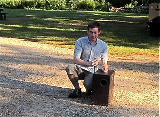

A Typical Day at CRC during Full Season

A day at comp begins at 7 AM with the first morning horn. The camp horn is an old foghorn that a crew member sounds to awaken camp, annouce breakfast, and annouce dinner. Click to see and hear the horn.
On cool mornings, a cheery fire in the century old stone fireplace greets guests as they enter Conant Lodge. Hot coffee and hot water for tea are available along with the makings for one’s bag lunch.

The lunch table offers many varieties of bread, along with sliced meats, cheeses, tuna and egg salad, pickles, lettuce, tomatoes, celery and carrot sticks, apples, oranges, granola bars, cheese cubes, home made fruit cake and cookies – and peanut butter and jelly. Lunches can be made either before or after breakfast.
A second horn, at 7:30 AM, proclaims breakfast is being served. Announcements of the day’s hikes are made during breakfast, and sign up sheets are passed around. Then it’s off to get organized for the activities of the day. For many guests, that means to prepare for a hike – either CRC led or on their own.
Signing out on the Wanderers List.
CRC Hike Leader or Naturalist led trips usually leave fom the front porch of Conant Lodge between 8 and 9 AM. Most CRC led hikes will return to camp in the afternoon so remember to take your lunch.
It is important that those going on their own hikes sign out on the Wanderer’s List.
Family hike to the Deers
Rest stop along the trail..
Usually there are three CRC trip leaders in camp each week. Two led trips are orgainized for each day. They vary in the number of participants, ranging from a few to over thirty depending on the destination, difficulty, weather, or guest's interest. See led trips for more pictures.
Lunch on Lord Hill.
Mid afternoon finds hot showers and cold lemonade waiting for guests. Once cleaned and refreshed, one can enjoy quiet moments or other in-camp activities while waiting for dinner.: Relaxing on the lodge porch reading, talking to friends, or watching hummingirds is one way to wind down after a busy day. Another is to swim at the dam, walk our self-guiding Nature Trail or enjoy a game of volleyball on our grass court. Youngsters often play on the lawn in front of the lodge, ride bicycles on our driveways, play quiet games in our lodge, play music or ping-pong in our rec hall or work with their families on Junior Naturalist projects.
Guests come together on the lodge porch a few minutes before 6 PM to await the horn announcing dinner.
Dinner is in the Conant Lodge on five days of each week and BBQs occur on Saturday and Thursday, outdoors if possible or in the lodge if it rains. Dinner is served family style. It includes fresh bread, salad, an entree, dessert, milk, iced tea, water and coffee.
BBQs are served cafeteria style. Appetizers, salads, cold drinks, meats, fish, corn, rolls, buns and condiments are laid out on tables around the lawn behind the lodge. Dessert and coffee is available at the end of the BBQ.
After dinner, activities may include lawn games held on the grass in front of the lodge, trips to the Deer Hill Bog to look for moose, beaver, and water fowl, walks on the nature trail, or relaxing in the lodge or on the porch.
An evening program is announced at dinner that usually starts between 7:30 and 8:00 PM. The program changes from night to night. It varies between square dancing, lectures, sing-alongs, poetry readings, bingo, scrable contests, slide shows by guests, and, on Friday nights, a talent show.
Cofee, tea, cocoa and hot water are available in the lodge until camp-wide quiet time at 10 PM.